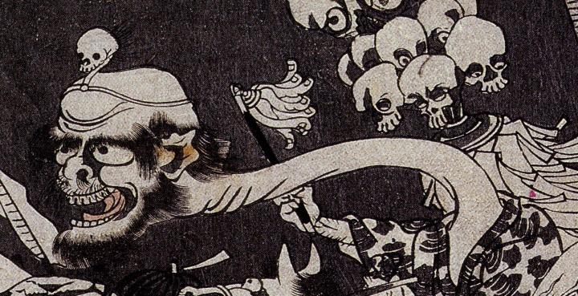

采配を振る、首が長く伸びた大入道。髑髏のついた金輪を頭につけている。
著作者：歌川国芳／出典：親書誌：M80_naprstek_0017：源頼光公館土蜘作妖怪図；ミナモトライコウヤカタツチグモヨウカイヲナスズ／日付：2011／資源識別子：M80_naprstek_0017_0007_0000
Copyright (c)2010- International Research Center for Japanese Studies, Kyoto, Japan. All rights reserved.